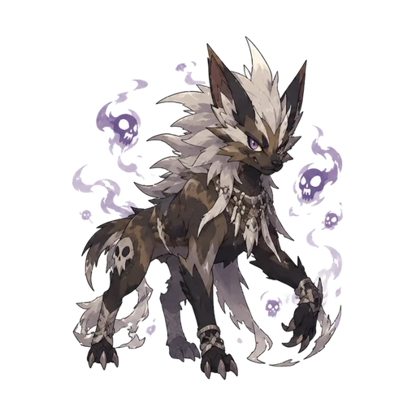
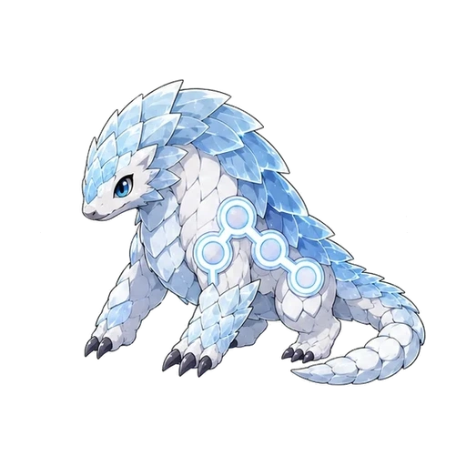

Skip opening
✠
ABYSSALS
Press to Continue
New Game
Load Game
Download save
Upload save
Replay opening
Animations
Device setting
Full
Reduced
Back
Install on this device
Preparing offline play…
Chapter 1
Left Behind
Continue
ABYSSALS
CHAPTER I · LEFT BEHIND
Civeton · Morning
Menu
Journal
Sound off
?
THE MORTAL WORLD
Civeton
Find Pate and Trade
Walk with WASD or arrow keys. Click a location to approach.
Interact
E
✠
✠
ABYSSALS
FIELD RELIC
✠
▲
◀
▶
▼
B
A
Run OFF
Select
Start
A · Confirm B · Back Start · Menu